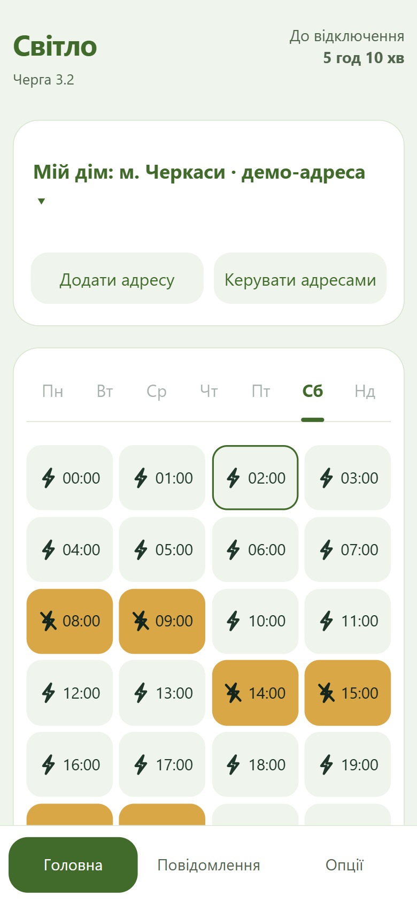

Доба як на долоні
Погодинні плитки показують інтервали відключення, а відлік у шапці — найближчу зміну. В опціях обирай вигляд плиток і лампочки замість блискавок.
Погодинні · планові · аварійніДля Христинівки та Черкащини
Графік відключень, нагадування й погода — щоб встигнути зі своїми планами. Тепер на Android та iPhone.
Як встановити на свій телефон
На кожен день
Для дому, роботи й рідних. Обери адресу один раз — і перевіряй графік тоді, коли зручно.
Погодинні плитки показують інтервали відключення, а відлік у шапці — найближчу зміну. В опціях обирай вигляд плиток і лампочки замість блискавок.
Погодинні · планові · аварійніЗбережи дім, роботу чи адресу батьків. Перемикайся зі списку: графік, сповіщення й погода слідують за активною адресою.
До 10 збережених адресГортай доступні дні та дивись підсумки зі світлом і без нього. Погода — на наступні 24 години, завтрашній графік — після публікації.
Прогноз погоди на 24 годиниЗазирни всередину
Світла чи темна, Android чи iPhone — твій графік завжди поруч. Натисни на знімок, щоб роздивитися деталі.
М’який світлий фон, чіткі години та звичні кольори відключень.
Стримана темна палітра. Тему можна змінити в опціях застосунку.

Графіки, адреси, погода та сповіщення. Додай іконку на Початковий екран.

Приклади інтерфейсу Android 1.4.2 та версії для iPhone у мобільному браузері. У нових версіях вигляд окремих елементів оновлено. Адреса, погода й години на знімках — демонстраційні дані.
28 жовтня 2026 · Перевидання 1.5.7: виправлено додавання компактного віджета.
Для твого телефона
Обери свій телефон. Кілька простих кроків — і графік твоєї адреси завжди під рукою.
Android 8.0+ · 1.5.7 · 2,2 МБ
Графік, погода, сповіщення та два віджети для головного екрана.
Вже користуєшся? Встанови нову версію поверх попередньої — адреси й віджети збережуться.
Встановлення через Safari
Ті самі графіки, адреси, погода та сповіщення.
Сповіщення доступні з iOS 16.4 після додавання на Початковий екран. Час доставки залежить від системи.
Коротко про важливе
Без складних налаштувань.
І без прихованих умов.
Так. Без реклами, підписок, прихованих платежів і реєстрації.
З офіційних публікацій і адресних сервісів АТ «Черкасиобленерго». «Світло» — незалежний застосунок, розробник не представляє оператора. Графік на завтра доступний після публікації.
Застосунок показує дані оператора, а не вимірює напругу в будинку. Незаплановані відключення можливі. Невідома черга чи неповні дані не означають цілий день зі світлом. Якщо оновлення недоступне, зберігається останній графік із відповідною позначкою.
Номер рахунку вводити не потрібно: ти обираєш адресу з довідника. Підтверджену адресу можна зберегти і без повернутого сервісом рахунку. Погода визначається за населеним пунктом активної адреси — доступ до геолокації телефона для цього не потрібен.
На Android збережені адреси, налаштування та кеші містяться на телефоні. Для визначення черги адреса перевіряється сервером «Світло» за офіційним реєстром. На iPhone адреси й підписка на сповіщення зберігаються на сервері для фонових оновлень; на пристрої є офлайн-копія. Видалити дані версії для iPhone можна в опціях.
Android 1.5.7 надсилає не частіше разу на добу випадковий ідентифікатор установки та версію для приблизного обліку активних установок. Цей сигнал не містить адреси, рахунку, номера телефона чи рекламного ідентифікатора.
Необхідні адресні запити надсилаються оператору. Погодний сервіс отримує населений пункт або його координати, але не рахунок, вулицю чи номер будинку.
Приблизно раз на годину, а також за кнопкою «Оновити». Інтервал фонових перевірок фіксований; система може відкладати їх. На iPhone перевірку графіків виконує сервер, а при відкритті завантажується останній результат. Для нових даних потрібен інтернет.
На Android застосунок перевіряє нові версії приблизно раз на добу; система може відкласти перевірку. APK також можна завантажити з цієї сторінки та встановити поверх попередньої версії. На iPhone окремий файл завантажувати не потрібно: зміни надходять через інтернет. Якщо з’явився напис про нову версію, закрий усі вікна «Світла» й відкрий знову.
Прогноз надає Open-Meteo за ліцензією CC BY 4.0, довідник місць — GeoNames. На головній доступні наступні 24 години для активної адреси.
Відкрий «Опції»: тут можна увімкнути світлу тему, обрати плитки з початком і кінцем інтервалу та лампочки замість блискавок. Налаштування зберігаються і доступні на Android та iPhone.
Гортай графік ліворуч чи праворуч або натискай потрібний день у панелі. Дні без даних неактивні; завтра відкривається після публікації графіка. Перегортання не змінює відлік у шапці — він стосується поточного моменту.
В опціях можна окремо увімкнути нагадування перед відключенням та очікуваним відновленням. Спільний інтервал — 5, 15, 30 або 60 хвилин, типово 30. Потрібен дозвіл на сповіщення; система може затримувати доставку.
Так. Відкрий «Світло» у Safari й додай на Початковий екран за інструкцією. Доступні графіки, кілька адрес, підсумки, погода, світла й темна теми та сповіщення. Віджети є лише на Android. Для сповіщень потрібні iOS 16.4 або новіша, встановлена іконка та дозвіл в опціях.
Світло для своїх
Завантаж собі та поділися цією сторінкою з рідними.
Android 8.0+ · 1.5.7 · 2,2 МБ
iPhone — встановлення через Safari